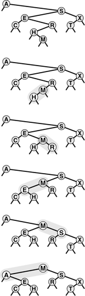
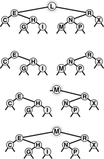
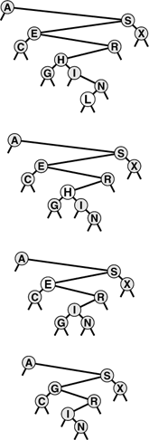
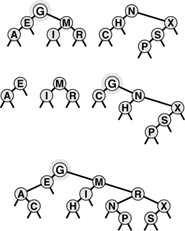

C++ Programming Robert Sedgewick - Princeton University Addison Wesley Professional Algorithms in C++, Parts 1–4: Fundamentals, Data Structure, Sorting, Searching, Third Edition C++ Programming Robert Sedgewick - Princeton University Addison Wesley Professional Algorithms in C++, Parts 1–4: Fundamentals, Data Structure, Sorting, Searching, Third Edition
12.9. BST Implementations of Other ADT Functions
The recursive implementations given in Section 12.5 for the fundamental search, insert, and sort functions using binary tree structures are straightforward. In this section, we consider implementations of select, join, and remove. One of these, select, also has a natural recursive implementation, but the others can be cumbersome to implement, and can lead to performance problems. The select operation is important to consider because the ability to support select and sort efficiently is one reason that BSTs are preferred over competing structures for many applications. Some programmers avoid using BSTs to avoid having to deal with the remove operation; in this section, we shall see a compact implementation that ties together these operations and uses the rotation-to-the-root technique of Section 12.8.
Generally, the operations involve moving down a path in the tree; so, for random BSTs, we expect the costs to be logarithmic. However, we cannot take for granted that BSTs will stay random when multiple operations are performed on the trees. We shall return to this issue at the end of this section.
To implement select, we can use a recursive procedure that is analogous to the quicksort-based selection method that is described in Section 7.8. To find the item with the kth smallest key in a BST, we check the number of nodes in the left subtree. If there are k nodes there, then we return the item at the root. Otherwise, if the left subtree has more than k nodes, we (recursively) look for the kth smallest node there. If neither of these conditions holds, then the left subtree has t elements with t < k, and the kth smallest element in the BST is the (k - t - l)st smallest in the right subtree. Program 12.14 is a direct implementation of this method. As usual, since each execution of the function ends with at most one recursive call, a nonrecursive version is immediate (see Exercise 12.78).
The primary algorithmic reason for including the count field in BST nodes is to support the implementation of select. It also allows us to support a trivial implementation of the count operation (return the count field in the root), and we shall see another use in Chapter 13. The drawbacks to having the count field are that it uses extra space in every node, and that every function that changes the tree needs to update the field. Maintaining the count field may not be worth the trouble in some applications where insert and search are the primary operations, but it might be a small price to pay if it will be important to support the select operation in a dynamic symbol table.
We can change this implementation of the select operation into a partition operation, which rearranges the tree to put the kth smallest element at the root, with precisely the same recursive technique that we used for root insertion in Section 12.8: If we (recursively) put the desired node at the root of one of the subtrees, we can then make it the root of the whole with a single rotation. Program 12.15 gives an implementation of this method. Like rotations, partitioning is not an ADT operation because it is a function that transforms a particular symbol-table representation and should be transparent to clients. Rather, it is an auxiliary routine that we can use to implement ADT operations or to make them run more efficiently. Figure 12.17 depicts an example showing how, in the same way as in Figure 12.14, this process is equivalent to proceeding down the path from the root to the desired node in the tree, then climbing back up, performing rotations to bring the node up to the root.
This sequence depicts the result (bottom) of partitioning an example BST (top) about the median key, using (recursive) rotation in the same manner as for root insertion.

Program 12.14. Selection with a BST|
This procedure assumes that the subtree size is maintained for each tree node. Compare the program with quicksort-based selection in an array (Program 9.6).
private:
Item selectR(link h, int k)
{ if (h == 0) return nullItem;
int t = (h->l == 0) ? 0: h->l->N;
if (t > k) return selectR(h->l, k);
if (t < k) return selectR(h->r, k-t-1);
return h->item;
}
public:
Item select(int k)
{ return selectR(head, k); }
|
To remove a node with a given key from a BST, we first check whether the node is in one of the subtrees. If it is, we replace that subtree with the result of (recursively) removing the node from it. If the node to be removed is at the root, we replace the tree with the result of combining the two subtrees into one tree. Several options are available for accomplishing the combination. One approach is illustrated in Figure 12.18, and an implementation is given in Program 12.16. To combine two BSTs with all keys in the second known to be larger than all keys in the first, we apply the partition operation on the second tree, to bring the smallest element in that tree to the root. At this point, the left subtree of the root must be empty (else there would be a smaller element than the one at the root—a contradiction), and we can finish the job by replacing that link with a link to the first tree. Figure 12.19 shows a series of removals in an example tree, which illustrate some of the situations that can arise.
This diagram shows the result (bottom) of removing the root of an example BST (top). First, we remove the node, leaving two subtrees (second from top). Then, we partition the right subtree to put its smallest element at the root (third from top), leaving the left link pointing to an empty subtree. Finally, we replace this link with a link to the left subtree of the original tree (bottom).

This sequence depicts the result of removingthe nodes with keys L, H, and E from the BST at the top. First, the L is simply removed, since it is at the bottom. Second, the H is replaced with its right child, the I, since the left child of I is empty. Finally, the E is replaced with its successor in the tree, the G.

This approach is asymmetric and is ad hoc in one sense: Why use the smallest key in the second tree as the root for the new tree, rather than the largest key in the first tree? That is, why do we choose to replace the node that we are removing with the next node in the inorder traversal of the tree, rather than the previous node? We also might want to consider other approaches. For example, if the node to be removed has a null left link, why not just make its right child the new root, rather than using the node with smallest key in the right subtree? Various similar modifications to the basic remove procedure have been suggested. Unfortunately, they all suffer from a similar flaw: The tree remaining after removal is not random, even if the tree was random beforehand. Moreover, it has been shown that Program 12.16 tends to leave a tree slightly unbalanced (average height proportional to  ) if the tree is subjected to a large number of random remove–insert pairs (see Exercise 12.84). ) if the tree is subjected to a large number of random remove–insert pairs (see Exercise 12.84).
Program 12.15. Partitioning of a BST|
Adding rotations after the recursive calls transforms the selection function of Program 12.14 into a function that puts the kth smallest node in the BST at the root.
void partR(link& h, int k)
{ int t = (h->l == 0) ? 0: h->l->N;
if (t > k )
{ partR(h->l, k); rotR(h); }
if (t < k )
{ partR(h->r, k-t-1); rotL(h); }
}
|
These differences may not be noticed in practical applications unless N is huge. Still, this combination of an inelegant algorithm with undesirable performance characteristics is unsatisfying. In Chapter 13, we shall examine two different ways to address this situation.
It is typical of search algorithms to require significantly more complicated implementations for removal than for search. The key values play an integral role in shaping the structure, so removal of a key can involve complicated repairs. One alternative is to use a lazy removal strategy, leaving removed nodes in the data structure but marking them as "removed" so that they can be ignored in searches. In the search implementation in Program 12.8, we can implement this strategy by skipping the equality test for such nodes. We must make sure that large numbers of marked nodes do not lead to excessive waste of time or space, but if removals are infrequent, the extra cost may not be significant. We could reuse the marked nodes on future insertions when convenient (for example, it would be easy to do so for nodes at the bottom of the tree). Or, we could periodically rebuild the entire data structure, leaving out the marked nodes. These considerations apply to any data structure involving insertions and removals—they are not peculiar to symbol tables.
We conclude this chapter by considering the implementation of remove with handles and join for symbol-table ADT implementations that use BSTs. We assume that handles are links and omit further discussion about packaging issues, so that we can concentrate on the two basic algorithms.
The primary challenge in implementing a function to remove a node with a given handle (link) is the same as it was for linked lists: We need to change the pointer in the structure that points to the node being removed. There are at least four ways to address this problem. First, we could add a third link in each tree node, pointing to its parent. The disadvantage of this arrangement is that it is cumbersome to maintain extra links, as we have noted before on several occasions. Second, we could use the key in the item to search in the tree, stopping when we find a matching pointer. This approach suffers from the disadvantage that the average position of a node is near the bottom of the tree, and this approach therefore requires an unnecessary trip through the tree. Third, we could use a reference or a pointer to the pointer to the node as the handle. This method is a solution in C++ and in C, but not in many other languages. Fourth, we could adopt a lazy approach, marking removed nodes and periodically rebuilding the data structure, as just described.
The last operation for first-class symbol-table ADTs that we need to consider is the join operation. In a BST implementation, this amounts to merging two trees. How do we join two BSTs into one? Various algorithms present themselves to do the job, but each has certain disadvantages. For example, we could traverse the first BST, inserting each of its nodes into the second BST (this algorithm is a one-liner: use insert into the second BST as a function parameter to a traversal of the first BST). This solution does not have linear running time, since each insertion could take linear time. Another idea is to traverse both BSTs, to put the items into an array, to merge them, and then to build a new BST. This operation can be done in linear time, but it also uses a potentially large array.
Program 12.16. Removal of a node with a given key in a BST|
This implementation of the remove operation removes the first node with key v encountered in the BST. Working top down, it makes recursive calls for the appropriate subtree until the node to be removed is at the root. Then, it replaces the node with the result of combining its two subtrees—the smallest node in the right subtree becomes the root, then its left link is set to point to the left subtree.
private:
link joinLR(link a, link b)
{
if (b == 0) return a;
partR(b, 0); b->l = a;
return b;
}
void removeR(link& h, Key v)
{ if (h == 0) return;
Key w = h->item.key();
if (v < w) removeR(h->l, v);
if (w < v) removeR(h->r, v);
if (v == w)
{ link t = h;
h = joinLR(h->l, h->r); delete t; }
}
public:
void remove(Item x)
{ removeR(head, x.key()); }
|
Program 12.17 is a compact linear-time recursive implementation of the join operation. First, we insert the root of the first BST into the second BST, using root insertion. This operation gives us two subtrees with keys known to be smaller than this root, and two subtrees with keys known to be larger than this root, so we get the result by (recursively) combining the former pair to be the left subtree of the root and the latter to be the right subtree of the root (!). Each node can be the root node on a recursive call at most once, so the total time is linear.
Program 12.17. Joining of two BSTs|
If either BST is empty, the other is the result. Otherwise, we combine the two BSTs by (arbitrarily) choosing the root of the first as the root, root inserting that root into the second, then (recursively) combining the pair of left subtrees and the pair of right subtrees.
private:
link joinR(link a, link b)
{
if (b == 0) return a;
if (a == 0) return b;
insertT(b, a->item);
b->l = joinR(a->l, b->l);
b->r = joinR(a->r, b->r);
delete a; return b;
}
public:
void join(ST<Item, Key>& b)
{ head = joinR(head, b.head); }
|
An example is shown in Figure 12.20. Like removal, this process is asymmetric and can lead to trees that are not well balanced, but randomization provides a simple fix, as we shall see in Chapter 13. Note that the number of comparisons used for join must be at least linear in the worst case; otherwise we could develop a sorting algorithm that uses fewer than N lg N comparisons, using an approach such as bottom-up mergesort (see Exercise 12.88).
This diagram shows the result (bottom) of combining two example BSTs (top). First, we insert the root G of the first tree into the second tree, using root insertion (second from top). We are left with two subtrees with keys less than G and two subtrees with keys greater than G. Combining both pairs (recursively) gives the result (bottom).

We have not included the code necessary to maintain the count field in BST nodes during the transformations for join and remove, which is necessary for applications where we want to support select(Program 12.14) as well. This task is conceptually simple, but requires some care. One systematic way to proceed is to implement a small utility routine that sets the count field in a node with a value one greater than the sum of the count fields of its children, then call that routine for every node whose links are changed. Specifically, we can do so for both nodes in rotL and rotR in Program 12.12, which suffices for the transformations in Program 12.13 and Program 12.15, since they transform trees solely with rotations. For joinLR and removeR in Program 12.16 and join in Program 12.17 it suffices to call the node-count update routine for the node to be returned, just before the return statement.
The basic search, insert, and sort operations for BSTs are easy to implement and perform well with even a modicum of randomness in the sequence of operations, so BSTs are widely used for dynamic symbol tables. They also admit simple recursive solutions to support other kinds of operations, as we have seen for select, remove, and joinin this chapter, and as we shall see for many examples later in the book.
Despite their utility, there are two primary drawbacks to using BSTs in applications. The first is that they require a substantial amount of space for links. We often think of links and records as being about the same size (say one machine word)—if that is the case, then a BST implementation uses two-thirds of its allocated memory for links and only one-third for keys. This effect is less important in applications with large records and more important in environments where pointers are large. If memory is at a premium, we may prefer one of the open-addressing hashing methods of Chapter 14 to using BSTs.
The second drawback of using BSTs is the distinct possibility that the trees could become poorly balanced and lead to slow performance. In Chapter 13, we examine several approaches to providing performance guarantees. If memory space for links is available, these algorithms make BSTs an attractive choice to serve as the basis for implementation of symbol-table ADTs, because they lead to guaranteed fast performance for a large set of useful ADT operations.
Exercises |  12.78 Implement a nonrecursive BST select function (see Program 12.14). 12.78 Implement a nonrecursive BST select function (see Program 12.14).
| | 12.79 Draw the BST that results when you insert items with the keys E A S Y Q U T I O N into an initially empty tree, then remove the Q. | | 12.80 Draw the binary search tree that results when you insert items with the keys E A S Y into one initially empty tree, and insert items with the keys Q U E S T I O N into another initially empty tree, then combine the result. | | 12.81 Implement a nonrecursive BST remove function (see Program 12.16). | | 12.82 Implement a version of remove for BSTs (Program 12.16) that removes all nodes in the tree that have keys equal to the given key. | |  12.83 Change our BST-based symbol-table implementations to support client item handles (see Exercise 12.7); add implementations of a destructor, a copy constructor, and an overloaded assignment operator (see Exercise 12.6); add remove and join operations; and use your driver program from Exercise 12.22 to test your first-class symbol table ADT interface and implementation. 12.83 Change our BST-based symbol-table implementations to support client item handles (see Exercise 12.7); add implementations of a destructor, a copy constructor, and an overloaded assignment operator (see Exercise 12.6); add remove and join operations; and use your driver program from Exercise 12.22 to test your first-class symbol table ADT interface and implementation.
| | 12.84 Run experiments to determine how the height of a BST grows as a long sequence of alternating random insertions and removals is made in a random tree of N nodes, for N = 10, 100, and 1000, and for up to N2 insertion– removal pairs for each N. | | 12.85 Implement a version of remove (see Program 12.16) that makes a random decision whether to replace the node to be removed with that node's predecessor or successor in the tree. Run experiments as described in Exercise 12.84 for this version. | | 12.86 Implement a version of remove that uses a recursive function to move the node to be removed to the bottom of the tree through rotations, in the manner of root insertion (Program 12.13). Draw the tree produced when your program removes the root from a complete tree of 31 nodes. | | 12.87 Run experiments to determine how the height of a BST grows as you repeatedly reinsert the item at the root into the tree that results when you combine the subtrees of the root in a random tree of N nodes, for N = 10, 100, and 1000. | | 12.88 Implement a version of bottom-up mergesort based on the join operation: Start by putting keys into N one-node trees, then combine the one-node trees in pairs to get N/2 two-node trees, then combine the two-node trees in pairs to get N/4 four-node trees, and so forth. | | 12.89 Implement a version of join (see Program 12.17) that makes a random decision whether to use the root of the first tree or the root of the second tree for root of the result tree. Run experiments as described in Exercise 12.87 for this version. |
|